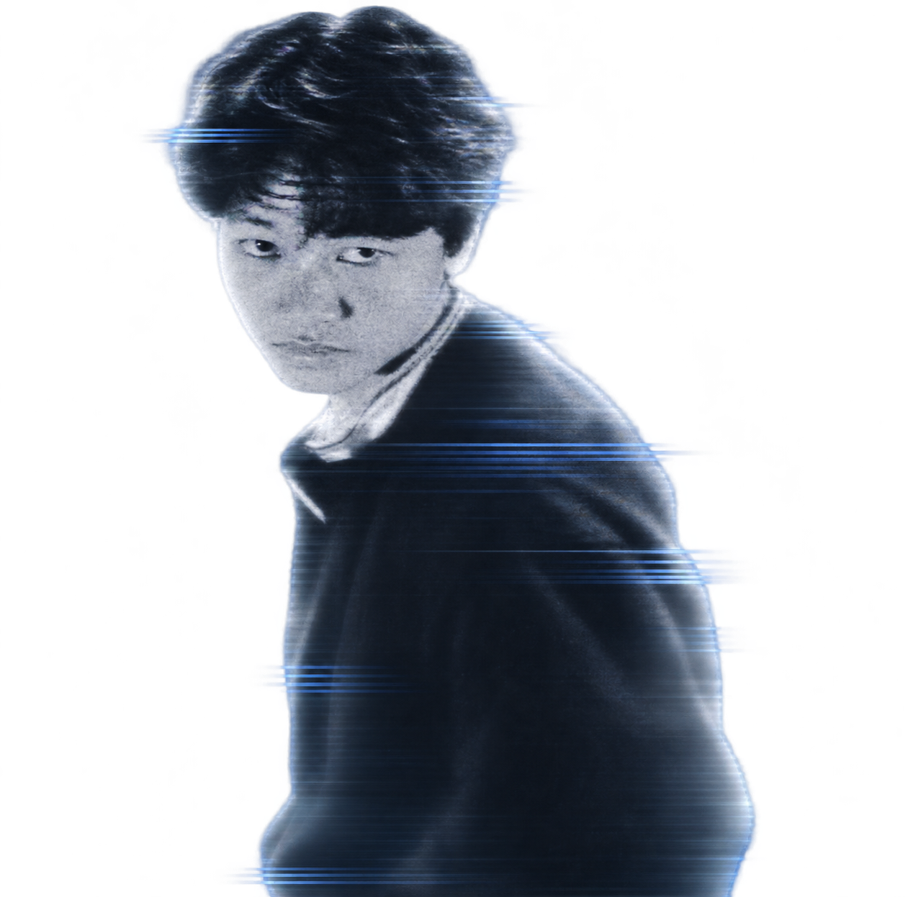
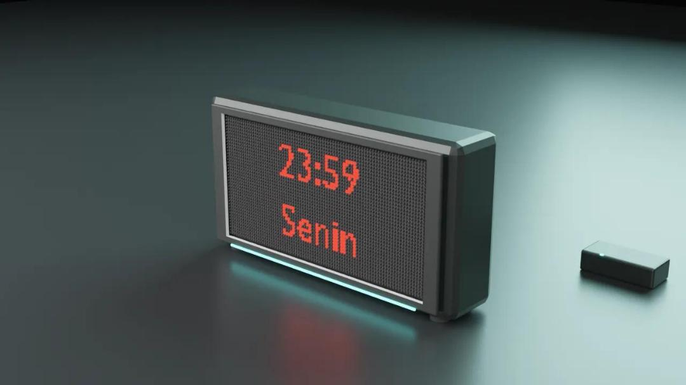
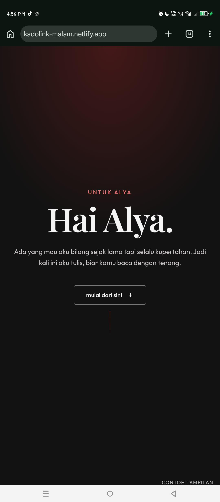
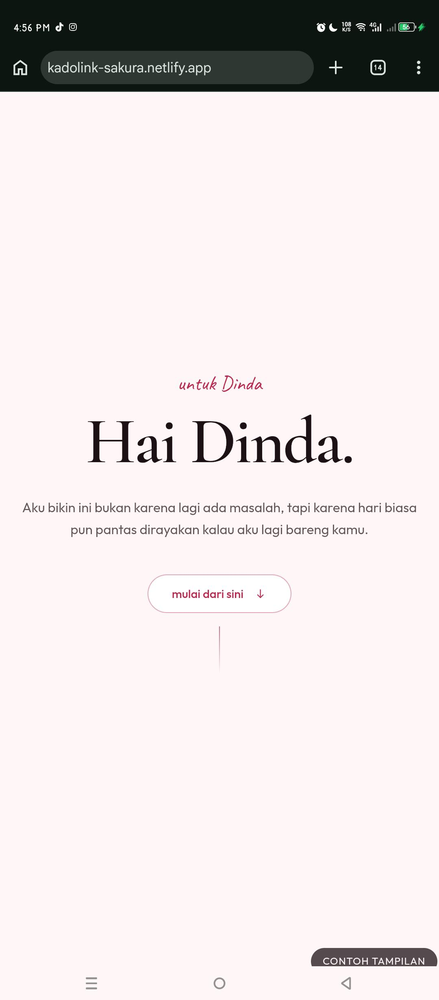

Tempora Nova
Produk dan lini solusi Internet of Things (IoT) yang berfokus pada perangkat pintar terkoneksi dan kontrol berbasis web.

“The World Hasn't Even Started Yet”
Saya adalah Rick, seorang Software Developer dan IoT Engineer asal Banjarmasin, Indonesia. Perjalanan saya di dunia teknologi dimulai dari titik yang sangat dasar—bahkan saya masuk ke dunia ini tanpa tahu cara menyalakan laptop.
Melalui proses belajar dan praktik langsung, saya berhasil membangun perusahaan dari nol dan terus mengembangkan solusi berbasis perangkat keras IoT serta aplikasi web.
Saya senang membangun sesuatu yang nyata dan fungsional—mulai dari pengendali perangkat cerdas berbasis mikrokontroler hingga aplikasi web interaktif.
Fokus utama saya saat ini berada di persimpangan IoT Engineering dan Web Development, terus merancang sistem baru dengan semangat bahwa perjalanan ini baru saja dimulai.
Produk dan lini solusi Internet of Things (IoT) yang berfokus pada perangkat pintar terkoneksi dan kontrol berbasis web.
Platform dan kreasi web hadiah digital personal untuk pasangan dengan berbagai tema visual yang dirancang khusus.

Pengendali jam digital dan running text berbasis IoT untuk menampilkan waktu serta teks yang dapat diganti dengan mudah melalui website.

Tema web hadiah digital bernuansa malam yang dibuat sebagai hadiah personal dan berkesan untuk pasangan.

Varian tema web hadiah digital untuk pasangan dengan nuansa lembut dan estetik yang dirancang untuk momen spesial.
Membangun antarmuka responsif, logika aplikasi web, dan integrasi kontrol perangkat.
Merancang firmware mikrokontroler, sinkronisasi waktu, dan komunikasi real-time.
Untuk kerja sama proyek Web Development, IoT, atau pertanyaan seputar produk.
Akses katalog produk, halaman utama, dan akun Instagram resmi: